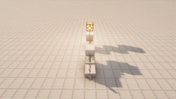
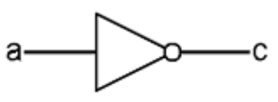
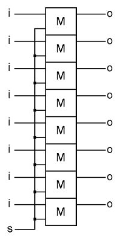
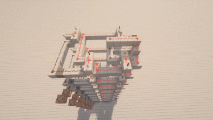
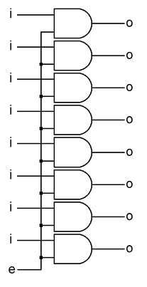
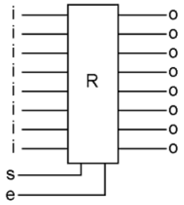

256 Bytes of RAM in Minecraft
2022-09-07
In this post, I would like to describe how to make 256 bytes of RAM out of some registers and decoders. I will be following the instructions in "But How Do It Know? The Basic Principles of Computers for Everyone" by J. Clark Scott. You can find the book here. I will explain everything in the order that it appears in this book. I will be using Minecraft to visualize the whole process. For each part, I will provide a schematic which you can download and import into your own Minecraft world so that you can follow along with this post.
Logic Gates
I'll start by describing a NAND gate. Here is the symbol I will use to refer to a NAND gate:

And here it is in Minecraft:

You can download the schematic here. Now I will test this NAND gate implementation on the following truth table:


As you can see, the redstone lamp only turns off when both inputs are on. In fact, this is the only logic gate you need to build a computer. Pretty neat! Now I'll connect both of the inputs to form this gate:


By connecting the two inputs of the original NAND gate, I've created what's called a NOT gate. I'll now test this new NOT gate implemenation to be sure it abides by the following truth table:


Since the two inputs of this gate are connected, it really only has a single input. In fact, this gate can be simplified even further:

The truth table can also be simplified further:

Now I'll run a test:

As you can see, the output is always the opposite of the input. In other words, the input is NOT the output, and the output is NOT the input (hence the name). This gate can also be referred to as an inverter, because it inverts its input. This symbol can be used to refer to a NOT gate:

You can download the schematic here. Moving along, I will combine the NAND gate and the NOT gate like this diagram:


I'll tell you more about this gate in just a moment, but first I want to test it on the following truth table:


This combination of gates is called an AND gate, and can be referred to using this symbol:

The chart can be simplified further, since the "x" bit is not used:

You can download the schematic for this gate here.
You'll notice that the output of the AND gate is the opposite of the NAND gate, and vice-versa. For the AND gate, both the first input AND the second input must be on in order for the output to be on. As for the NAND gate, both the first input and the second input must be on, in order for the output to be off.
Memory
Now that I've shown you how to make a NAND gate, I'll show you how they can be combined to store one bit of memory. The following circuit can store one bit of computer memory, and is entirely made up of NAND gates:

Here it is in Minecraft:

I encourage you to download the schematic here and follow along in Minecraft. Being able to visibily see where the electricity is flowing helps tremendously in understanding how this circuit works. This circuit will be the building block for the RAM itself, so understanding how it works is vital to understanding how the following RAM configuration works.
It works like this: the lever on the left corresponds to "i" in the diagram. This is the lever that should be used to input the bit to be remembered. The lever on the right corresponds to "s" in the diagram. I'll follow what the book says, and set the "s" input to 1 and leave the "i" input as 0:

- As you can see, "i" and "s" go into gate 1. I just turned "s" on, so one input to gate 1 is on, but the other input is off, therefore the output of gate 1 (the wire "a") remains on.
- "A" and "s" are both inputs to gate 2. Since they are both on, the output of gate 2, the wire "b", is off.
- Now the wire "b", which is an input to gate 4, is off, therefore the output of gate 4, wire "c", is on.
- Wire "c" and and "a" are both on. They are both inputs to gate 3, therefore the output of gate 3, "o", is off.
The most important thing to note here is when the "s" input is turned on, the output "o" will reflect the value of the "i" input. I'll demonstrate:

- With "s" still on, I change "i" to on. Now both inputs to gate 1 are turned on, therefore its output (the wire "a") is off.
- The wire "a" goes to an input of gate 2 and gate 3. Now that "a" is off, the output of gate 2, wire "b" is on, and the output of gate 3, "o", is on.
- The output "o" and the wire "b", which are inputs to gate 4, are now both on. This means the output of gate 4 is off, therefore the wire "c" is off.
- The wire "c" is off now, and it is an input to gate 3. Gate 3 now has two off inputs, so "o" remains on.
Here's what it looks like when I turn "i" off at this point, while "s" remains on:

As you can see, while "s" is on, the output "o" will be the same as the input "i". This isn't very useful by itself, so let's continue. I'll turn "i" back on:

And now I'm going to turn "s" off.

- When "s" turns off, the wire "a" will be on no matter what the value of "i" is.
- The wire "a" is an input to gate 2. The other input to gate 2 is still off, so its output, wire "b", remains on.
This is what happens when I pulse "i" while "s" is off:

Absolutely nothing! This is really exciting, because this means we can now store a bit of information in this circuit, and then come back for it at a later time. We can go for a walk, or watch a movie, and when we come back, our bit will still be represented in this circuit by output "o"!
Not only can we store a bit of information in this circuit, but we can just as easily store no bit. I will demonstrate. With the "s" and "i" inputs both on, I will turn off the "i" input:

As you'll recall, when the input "s" is turned on, the output "o" will be the same as the input "i". Now, while "i" is off, I will also turn "s" off:

So now we have "i" off, "s" off, and "o" off. Watch what happens when I pulse "i":

Again, absolutely nothing! So we have effectively "stored" nothing in this circuit. This may sound useless, but it's actually very important, because it means we can not only store a bit, but we can also effectively store the absence of a bit. In other words, we can store 1s and 0s.
This is the basic building block of all computer memory. To quote the book:
All that computer memory is, is a way of preserving the way a bit was set at some point in time.
This is the symbol I will use to refer to this 1-bit memory circuit:

The input "i" is the input bit you want to save. When the "s" bit is on, it allows the input "i" into the memory circuit. When "s" is turned off, it locks "i" in place, or "sets" it. The output "o" represents the current or saved data. The "M" stands for memory. We can refer to this as a 1-bit memory, because it is capable of remembering 1 bit of information.
Byte
Now I'll stack up eight of these 1-bit memory circuits and connect their "s" inputs to create a byte, like this:


I used command blocks to connect their "s" inputs wirelessly:

This assembly of eight 1-bit memory circuits with their "s" inputs connected is referred to as a byte. You can download the schematic here. This picture describes a byte:

Now I'll stack eight AND gates on top of eachother and connect one of their inputs to make an additional part called an enabler. It looks like this:

I used command blocks to connect the "e" inputs wirelessly, just like the byte. You can download the schematic here.
This is the picture I will use to refer to this circuit:


As you can see, the output of the enabler will reflect its "i" input, only if the "e" input is set to 1. If the "e" input is set to 0, then the output will always be 0. Now I'll connect the eight outputs of the byte circuit to the inputs of the enabler circuit, like this:


This combination of a byte and an enabler is called a register. To quote the book:
Register simply means a place to record some kind of information.
In this case, we store the state of the eight input bits. You can download the schematic here. This is the picture I'll use to refer to a register:

Now I will demonstrate how to use the register:

First, I will store a bit in the memory circuit. Then I will fly to the output of the memory circuit, which is connected to the input of the enabler. Notice how the output of the enabler is still 0. It's only when I set the "e" or "enable" bit to 1, that the enabler output reflects the value of its data input.
In other words, the "e" bit on the enabler enables you to see what's stored inside the memory circuit it's connected to. If the "e" bit on the enabler is 0, then the output will always be 0.
The "s" input on the register will be referred to as the "set" bit, because it can be used to set the value stored inside the register. The "e" input will be referred to as the "enable" bit, because it can be used to see what value is stored in the register.
Bus
Now we need to connect multiple registers together. Since each register has eight memory bits, each with an input and an output, we'll need exactly eight wires. To simplify the circuit diagram, we can replace the eight wires with a double line, like this:

This grouping of eight wires is called a bus. Here's what a bus might look like in Minecraft:

Not much to explain here. Now I'll use a bus to connect five registers together, like this:


You can download the schematic here. I will demonstrate how it works by copying a byte from R1 to R4. First I will set the "set" bit to 1 on R1. Starting from the bottom, I will key in a byte value of 1101 0011.

Then I will set the "set" bit of R1 to 0 to store this one byte value inside the register. Also I destroy the levers I used to set the byte.

Now I have a one byte value of 1101 0011 stored inside R1. Here I will show you how it's being stored:

As you can see, the one byte value is preserved in the output of each 1-bit memory circuit. It's time to copy this byte from R1 to R4. First I will set the "enable" bit of R1 to 1. This will allow each bit in the byte to pass through the enabler. Each output of the enabler is wirelessly connected to its own bus lane. Here I will demonstrate:

Upon setting the enable bit to 1, each bit passes through the enabler and onto the appropriate bus lane. Now the byte 1101 0011 is on the bus. This bus reaches the inputs of all five registers, so all that's left to do is briefly set the "set" bit of R4 to 1 and then back to 0:

This allows R4 to capture the data on the bus. Now I will confirm that the byte is stored on R4 by checking the output of each 1-bit memory on R4:

It appears the byte has been successfully copied to R4. It's important to note that the byte was not moved to R4, but copied. A byte is a location that can be in one of 256 states. Bytes do not move around. The byte only refers to the location.
Address
A single byte is capable of referring to exactly 256 unique combinations of 0 and 1. This means we can use a single byte to refer to 256 different locations in memory. Without a way to uniquely refer to a location in memory, there's no way to read or write from that memory location. This is why the number of values that you can store in a RAM array is directly related to the number of address inputs.